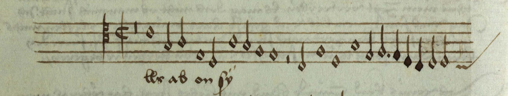
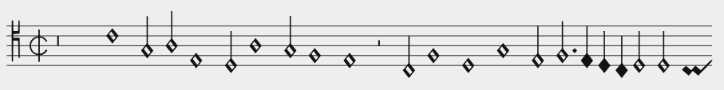

If you have seen white mensural notation before, you will have no hard time to read this little piece. It is the first staff of the tenor voice for “Als ab on sy” from D-Mu MS 8° 328, written around 1525, supposedly by Ludwig Senftl:

And this is the MEI rendition of the above:

What follows in the code blocks below is the corresponding MEI source code. Don't worry if you cannot make sense of all of it yet – we will go over each statement in the next steps of this tutorial!
First of all, mensural MEI uses a specific schema, mei-Mensural.rng:
<?xml version="1.0" encoding="UTF-8"?> <?xml-model href="https://music-encoding.org/schema/5.1/mei-Mensural.rng" type="application/xml" schematypens="http://relaxng.org/ns/structure/1.0"?> <?xml-model href="https://music-encoding.org/schema/5.1/mei-Mensural.rng" type="application/xml" schematypens="http://purl.oclc.org/dsdl/schematron"?>
The MEI header looks as usual (and is not populated for this example).
<mei xmlns:xlink="http://www.w3.org/1999/xlink" xmlns="http://www.music-encoding.org/ns/mei" meiversion="5.1">
<meiHead>
<fileDesc>
<titleStmt>
<title/>
</titleStmt>
<pubStmt/>
</fileDesc>
</meiHead>
The <staffDef> which identifies our example as notationtype="mensural.white".
<music>
<body>
<mdiv>
<score>
<scoreDef>
<staffGrp>
<staffDef n="1" notationtype="mensural.white" clef.line="4" clef.shape="C" lines="5" mensur.sign="C" mensur.slash="1" tempus="2" prolatio="2">
</staffDef>
</staffGrp>
</scoreDef>
In the <section> below, you see the actual notes with the mensural-specific encoding of durations (explained in later steps of the tutorial).
<section>
<staff n="1">
<layer n="1">
<rest dur="brevis" />
<note dur="semibrevis" pname="c" oct="4"/>
<note dur="minima" pname="g" oct="3"/>
<note dur="minima" pname="a" oct="3"/>
<note dur="semibrevis" pname="e" oct="3"/>
<note dur="minima" pname="d" oct="3"/>
<note dur="semibrevis" pname="a" oct="3"/>
<note dur="minima" pname="g" oct="3"/>
<note dur="semibrevis" pname="f" oct="3"/>
<note dur="semibrevis" pname="e" oct="3"/>
<rest dur="minima" />
<note dur="minima" pname="c" oct="3"/>
<note dur="semibrevis" pname="f" oct="3"/>
<note dur="semibrevis" pname="d" oct="3"/>
<note dur="semibrevis" pname="g" oct="3"/>
<note dur="minima" pname="e" oct="3"/>
<note dur="minima" pname="f" oct="3" dots.ges="1"/><dot />
<note dur="semiminima" pname="e" oct="3"/>
<note dur="semiminima" pname="d" oct="3"/>
<note dur="semiminima" pname="c" oct="3"/>
<note dur="minima" pname="d" oct="3"/>
<note dur="minima" pname="d" oct="3"/>
<custos pname="c" oct="3"/>
</layer>
</staff>
</section>
</score>
</mdiv>
</body>
</music>
</mei>